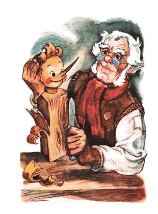

Carlo tinggal di sebuah pondok di kolong tangga, tempat dimana dia tidak punya apapun di sana, selain perapian yang cantik; di dinding menghadap pintu.
Tapi perapian yang cantik itu, dan api di dalam perapian itu, dan ketel, yang mendidih di atas api, ternyata tidaklah nyata; hanya terlukis pada selembar kanvas usang.
Carlo masuk kedalam pondok, duduk di kursi satu-satunya menghadap meja tanpa kaki, dia letakkan kayu itu begitu dan begini, dan mulailah dengan pisau dia raut kayu itu membuat sebuah boneka.
- "Bagaimana aku menamainya?" /Carlo berpikir/ Akan kunamai dia Buratino. Nama itu akan mendatangkan kebahagiaan padaku. Setahuku ada satu keluarga, semuanya bernama Buratino: ayahnya Buratino, ibunya Buratino, anak-anaknya pun Buratino... Mereka semua hidup ceria dan bahagia.
Langkah pertama dia raut kayu itu menjadi rambut, lalu kening, lalu sepasang mata...
Tiba-tiba sepasang mata itu dengan sendirinya terbuka dan menatapnya...
Carlo tampaknya tidak ada tanda-tanda kalau dia kaget, malah dia bertanya dengan lembut.
- Sepasang mata kayu, kenapa kalian menatap aneh begitu padaku?
Tapi boneka itu hanya diam; tentu saja, karena dia belum punya mulut. Carlopun membentuk pipi, kemudian membentuk hidung; sederhana saja...
Tiba-tiba hidung itu dengan sendirinya meregang, tumbuh, dan berubah menjadi hidung panjang nan runcing, Carlo sampai mendengus:
- Tidak baik, panjang...
Lantas dia potong bagian ujung hidung itu. Tidak seberapa!
Hidung itu menggeliat, berputar-putar, dan kembali seperti semula; batang panjang hidung runcing penasaran.
Carlo lanjut ke bagian mulut. Tapi begitu selesai dia mengukir sebuah bibir; mulut itu langsung terbuka:
- Hi-hi-hi, Ha-ha-ha!
Kemudian nyosor-nyosor, mengusili, menjulurkan lidah merahnya yang tipis.
Carlo, tanpa menghiraukan tingkah-tingkahnya itu lanjut saja mengukir, memotong dan meraut. Membuatkan boneka itu dagu, leher, bahu, badan, lengan...
Akan tetapi, belum tuntas dia mengukir jemari yang terakhir, Buratino mulai menjamah kepala Carlo yang sulah, menggetok dan mengelitik.
- Dengar, /kata Carlo dengan tegas/ belum tuntas aku mengukirmu, tapi kau sudah mulai bertingkah... apalagi selanjutnya... hah?
Lalu dia melotot tajam pada Buratino, sedangkan mata Buratino yang bulat, menatap pada papa Carlo seperti mata tikus.
Carlo membuatkannya kaki yang panjang lentik dengan telapak kaki yang lebar. Di akhir pekerjaan, dia turunkan anak kayu itu ke lantai, untuk diajarkan berjalan.

Buratino bergoncang-goncang berdiri di atas kedua kakinya yang kurus, selangkah pertama, selangkah lagi, melompat, melompat lurus ke pintu, melewati ambang pintu dan terus ke jalan.
Carlo panik dan mengejarnya:
- Hei, nakal, kembali sini!...
Arah ke mana Buratino terbirit-birit di sepanjang jalan, seperti seekor terwelu, dengan hanya beralaskan telapak kaki kayu, dia "taki-tuk, taki-tuk" menutuk-nutuk jalan batu...
- Cegat dia! /sahut Carlo/
Para pejalan kaki tertawa-tawa, menunjuk-nunjuk ke arah Buratino yang kabur. Di persimpangan jalan berdiri seorang polisi bongsor berkumis baplang dan mengenakan topi segitiga.
Melihat ada manusia kayu kabur, dia lebarkan kedua kakinya, menutup jalan. Buratino hendak menerobos celah antara dua kakinya, namun polisi itu segera menerkam batang hidungnya dan memeganginya, hingga papa Carlo tiba...
- Heh, tunggu kau ya, urusan kita belum selesai /kata Carlo terengah-engah dan hendak menyelipkan Buratino kedalam saku jaket/
Buratino sungguh tidak rela, di hari yang indah ini, di depan orang banyak, berakhir dengan kaki terperangkap di dalam saku jaket; lantas dengan cekatan dia berbalik, menjatuhkan diri ke jalan batu dan pura-pura mati...
- Ay, ay, /polisi itu berkata/ hal ini tampaknya tidak baik!
Para pejalan kaki mulai berkerumun. Melihat Buratino yang tergeletak, mereka menggeleng-gelengkan kepala.
- Malang sekali... /gaduh mereka/ Pasti karena kelaparan...
- Carlo membantingnya sampai mati! /seseorang bergaduh/ si pengamen tua ini hanya pura-pura jadi orang baik, dia kejam, dia orang jahat!
Mendengar itu semua, polisi berkumis menarik kerah si Carlo yang apes dan menyeretnya ke kantor polisi.
Carlo terseok-seok dan mengerang dengan keras:
- Oh, oh... sudah nasibku membuat anak dari kayu!
Ketika jalanan sepi, Buratino mengangkat batang hidungnya, melihat sekeliling, kemudian berlari sambil melompat-lompat, pulang ke rumah...